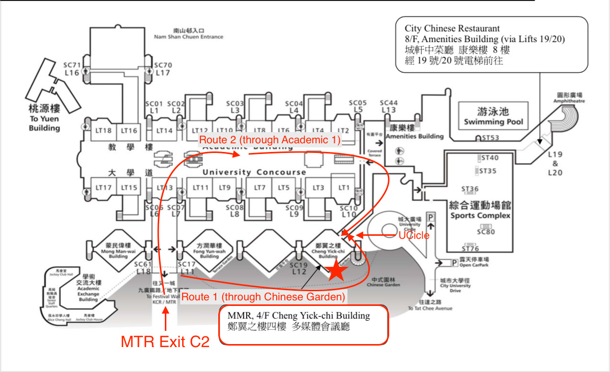
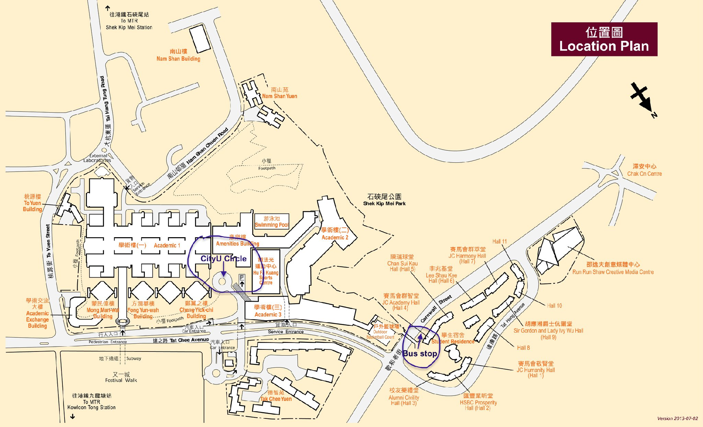

The symposium will be held in MMR, Cheng Yick-chi Building 4/F, please refer to the map below.
You can ride on the MTR from Airport Station to Kowloon Tong Station, the nearest station to CityU. First take the Airport Express to Tsing Yi Station; then change to the Tung Chung Line and go to Lai King Station; from there change to the Tsuen Wan Line to Prince Edward Station; finally, change to the Kwun Tong Line to Kowloon Tong Station. Please visit the MTR's website to check the route and fare.
From the public bus terminal at the airport, take bus route E22 (do not take A22, E22A or E22P), and get off at Shek Kip Mei Park Station at Cornwall Street in Kowloon Tong. You may ask the bus driver for assistance. The Student Residence at Cornwall Street is right beside the bus stop, then there will be noticable sign pointing the direction of AC1, just follow the sign and it only takes 5 minutes to arrive CityU Circle.
If you take a taxi at the airport, it will cost about 40 minutes to get to CityU. Pleae ask taxi driver to go to CityU circle, and then you can arrive CityU circle directly.
You can also scan the QR code below to access our accurate location:
{kind=link}
{kind=link}